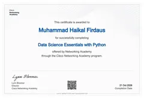
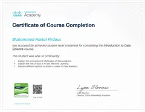
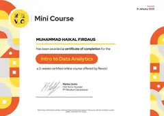
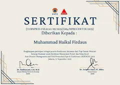
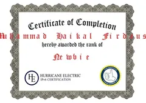

Data Science Essentials with Python
21 Okt 2026
Saya seorang Lulusan Ilmu Komputer
Mencari magang atau posisi junior di bidang analisis data, web development, dan IT support.
Profil singkat dan posisi yang saya cari.
Lulusan baru S1 Ilmu Komputer Universitas Pakuan. Berpengalaman membangun sistem pelaporan pengaduan bencana berbasis web dengan Laravel saat magang di BPBD Kabupaten Bogor, serta menulis skripsi tentang prediksi harga daging ayam menggunakan LSTM. Penulis pertama sebuah publikasi ilmiah tentang simulasi dinamis. Mencari posisi sebagai web developer atau data analyst.
IPK dari 4,00, Cum Laude
Proyek skripsi LSTM, WebGIS, dan sistem pengaduan web
Bulan magang web developer BPBD Kabupaten Bogor
Sertifikat kursus, konferensi, dan sertifikasi
Pendidikan, pengalaman, dan kepemimpinan.
Lulusan Ilmu Komputer (Cum Laude, IPK 3,72/4,00) dengan pengalaman mengembangkan web dengan Laravel saat magang di BPBD Kabupaten Bogor, penulis skripsi peramalan LSTM, dan penulis pertama publikasi ilmiah. Mencari posisi junior sebagai data analyst, web developer, atau IT support. Teliti, cepat belajar, dan nyaman bekerja mandiri maupun dalam tim.
Universitas Pakuan Bogor, Fakultas MIPA
BPBD Kabupaten Bogor
ShopeeFood, Kab. Bogor
Seafood Sosis Tusuk Bakar (Seatukar), Kab. Bogor
PT Sanpak Unggul
Gunung Putri, Bogor
Kelompok Penyelenggara Pemungutan Suara
Tiga proyek, masing-masing dengan masalah, pendekatan, dan hasilnya. Gunakan filter untuk melihat sesuai bidang.
Masalah. Harga komoditas naik turun dan sulit diperkirakan.
Pendekatan. Mengumpulkan data harga harian Kota Bogor, membersihkannya, lalu membangun model LSTM multivariat beserta dashboard Streamlit.
Hasil. MAPE 0,45% pada data uji, dibandingkan baseline harga kemarin sebesar 0,41%.
Masalah. Memantau suhu dan kelembaban udara Kota Bandung secara hampir real-time di sembilan titik.
Pendekatan. Sensor IoT (ESP32, DHT22, GPS) mengirim data ke ThingSpeak, lalu ditampilkan di peta interaktif Leaflet dengan layer hasil analisis QGIS. Peran saya: analisis QGIS dan pembuatan WebGIS.
Hasil. Peta interaktif dengan sembilan titik pemantauan, layer batas desa dan jaringan jalan, serta nama lokasi otomatis dari koordinat GPS.
Masalah. Warga sulit menyampaikan laporan kejadian bencana.
Pendekatan. Menyesuaikan aplikasi web pengaduan open source (Laravel, lisensi MIT) menjadi sistem pelaporan bencana dengan peran masyarakat dan petugas, tanggapan, dan laporan.
Hasil. Masyarakat dapat mengirim laporan secara digital kepada petugas.
Artikel ilmiah internasional dengan saya sebagai penulis pertama.
Penulis. Muhamad Haikal Firdaus (penulis pertama), Ahmad Sopyan Sauri, Syaifa Turrohman, Eneng Tita Tosida (penulis korespondensi), Kotim Subandi, dan Victor Ilyas Sugara.
Isi. Model simulasi dinamis dengan pendekatan stock and flow dan causal loop diagram di iThink untuk memprediksi ketersediaan daging ayam di Kota Cilegon periode 2024–2034. Peran saya: mengembangkan model simulasi sebagai penulis pertama.
Dikelompokkan menurut bidang. Level “dasar” saya tulis apa adanya.
Kursus data, konferensi kebencanaan, dan sertifikasi jaringan. Klik gambar untuk memperbesar.

21 Okt 2026

13 Okt 2026

31 Jan 2025

12 Sep 2025

Juni 2026
Terbuka untuk magang dan posisi junior di bidang analisis data, web development, dan IT support.
Gunung Putri, Bogor, Jawa Barat